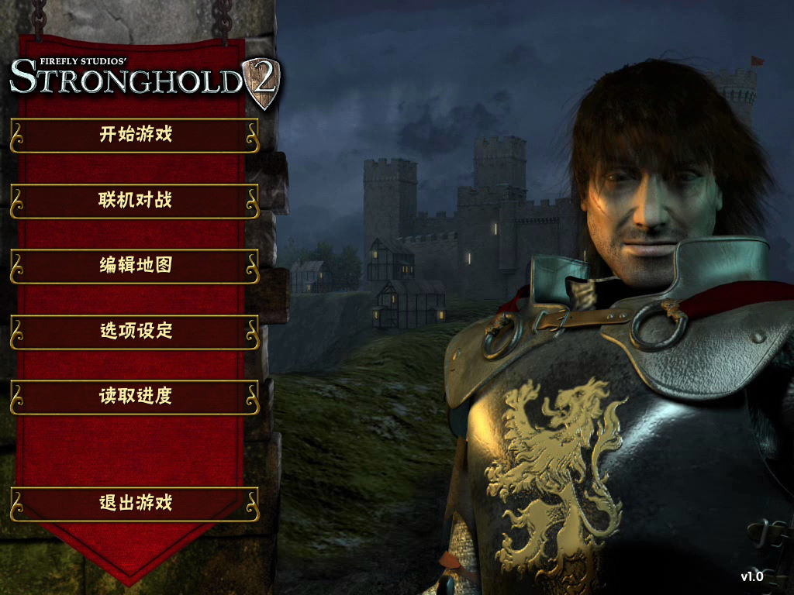
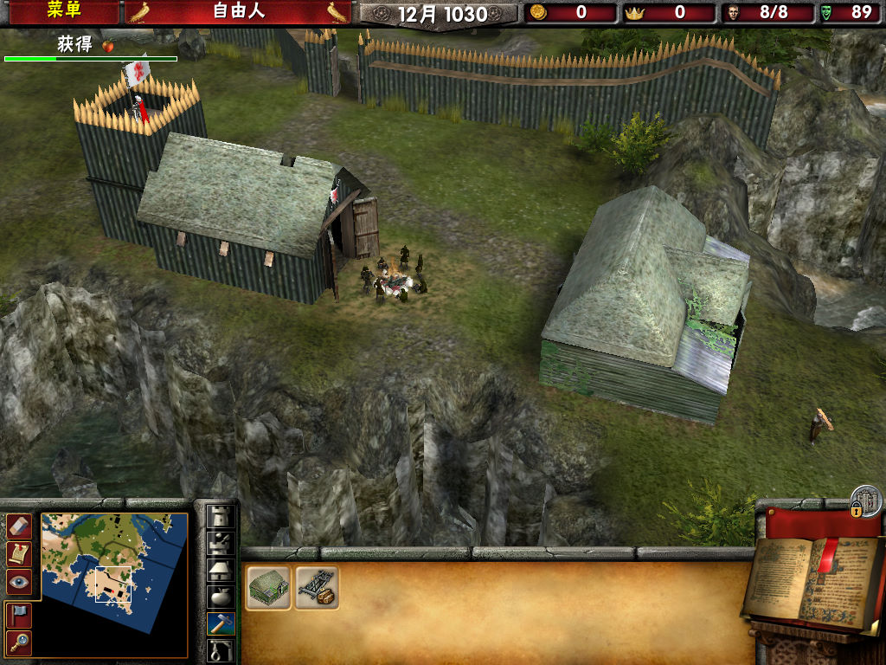

名稱：危城之戰2／要塞2／要塞攻防戰2 (Stronghold 2，簡中／英文版)
簡介：FireFly 2005年出品的即時戰略遊戲，由2K代理發行，2006年由索奧爾簡中化並代理
發行 [待補]。


保護：英文版為光碟SecuROM 7.02，簡中版無保護
備註：簡中版為1.0版
備註：漢化文字檔主要在i18n\en-us.xml，使用的字型則在ui\JUNISRG_.ttf。
檔案：stronghold2_v1_4_update.rar = 英文1.4更新檔
stronghold2_v1_41_update.rar = 英文1.41更新檔（須先更新至1.4）
minicd.rar = 最小光碟檢驗檔
nocd141.rar = 1.41免光碟檔